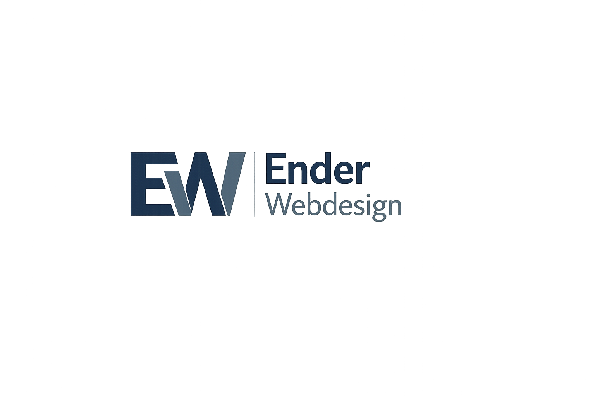
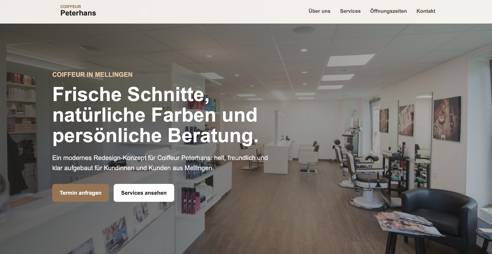
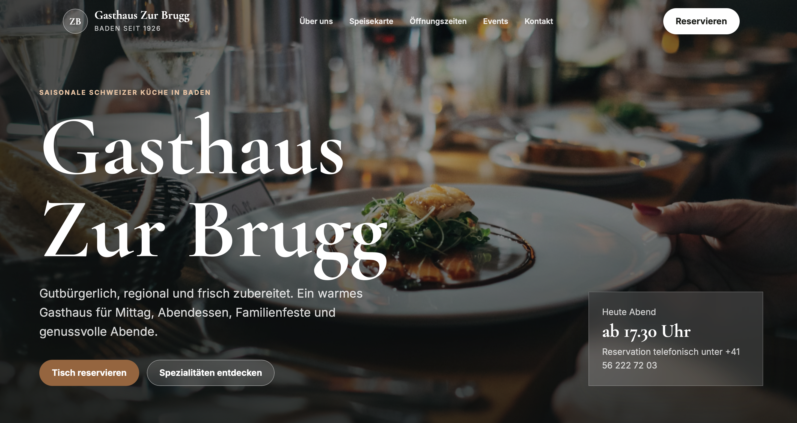
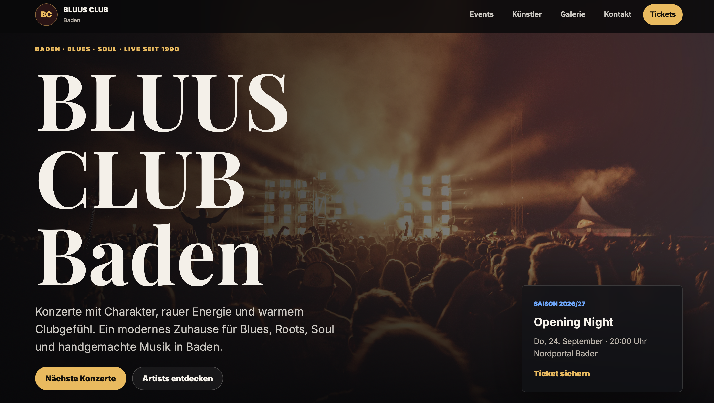

Webdesign aus der Region Baden
Ich erstelle einfache, moderne und übersichtliche Webseiten für kleine Firmen, Vereine, Restaurants und lokale Betriebe.
Kontakt aufnehmenPortfolio

Modernes Redesign-Konzept für einen lokalen Coiffeursalon in Mellingen mit Fokus auf Übersichtlichkeit, Atmosphäre und Termin-Anfrage.
Projekt ansehen
Elegantes Restaurant-Redesign mit warmer Atmosphäre, klaren Informationen, Speisekarte, Öffnungszeiten und Reservierungsbereich.
Projekt ansehen
Modernes Konzept für eine Musik- und Event-Webseite mit dunklem Design, Konzertbereich, Galerie und Ticket-Fokus.
Projekt ansehenÜber mich
Ich bin Schüler aus der Region Baden und interessiere mich für Webdesign. Ich erstelle moderne Webseiten, die auf dem Handy und Computer gut aussehen. Besonders gerne helfe ich kleinen lokalen Firmen, ihre Webseite moderner und übersichtlicher zu machen.
Kontakt
Dann schreiben Sie mir gerne eine E-Mail.
E-Mail schreiben